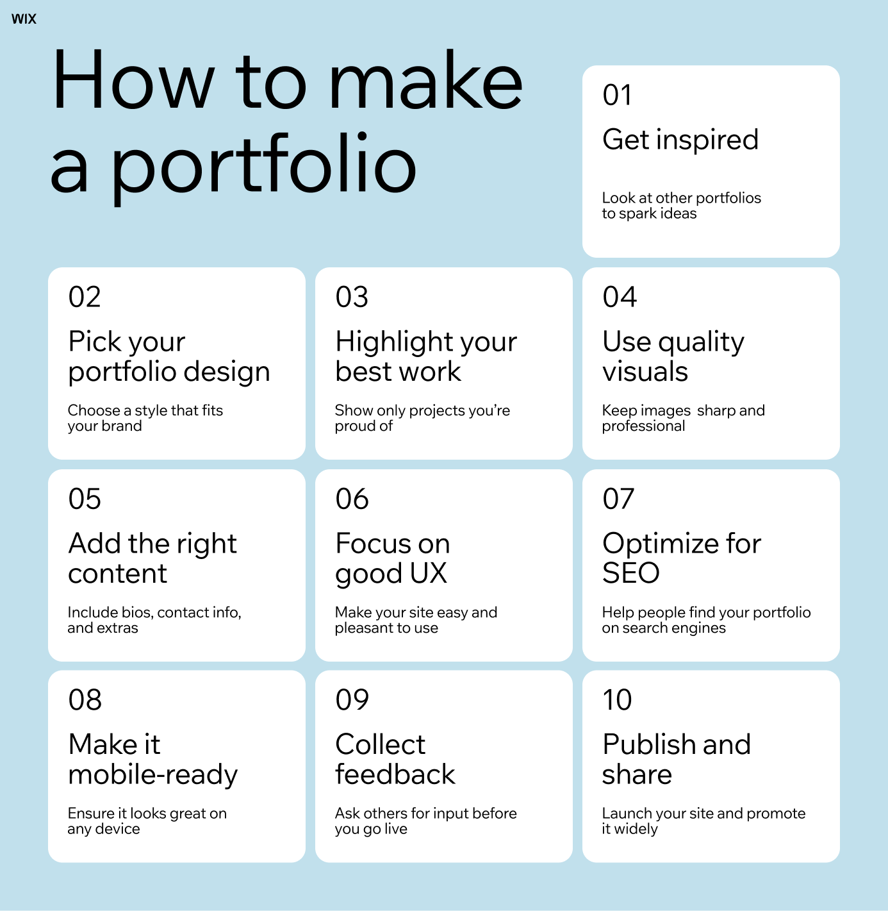

What Is a Portfolio?
A portfolio is a collection of work that shows your skills, experiences, and approach to problem-solving. It helps employers understand not only what you created, but how you think and work through challenges.
Why Use This Resource?
- Everything in One Place: Stop searching across multiple platforms. This site brings together resources for resumes, interviews, networking, mentorship, and more in one centralized location.
- Student-Focused Navigation: Content is organized by topic and common questions, making it easy to find what you need and take action quickly.
- Guidance Backed by Experts: All resources are recommended and reviewed by the UMSI Career Development Office, ensuring the information is accurate, relevant, and trustworthy.
- Always Accessible: The site is available anytime and on any device, with accessibility built in to support students with diverse needs.
- Modern Support, UMSI Excellence: Resources are informed by peer institutions while highlighting UMSI’s unique strengths and commitment to student success.
What to Include in a Portfolio
Strong portfolios focus on a few well-developed projects rather than many unfinished ones. Each project should explain the problem, your process, and the outcome in a clear and logical way.
Good Portfolio VS Bad Portfolio
Comparing strong and weak portfolio examples can help clarify what recruiters expect and how presentation impacts understanding.
Helpful Resources
UMSI students can use Career Development Office resources to improve their portfolios. Guides, workshops, and coaching sessions can help clarify expectations and strengthen presentation.